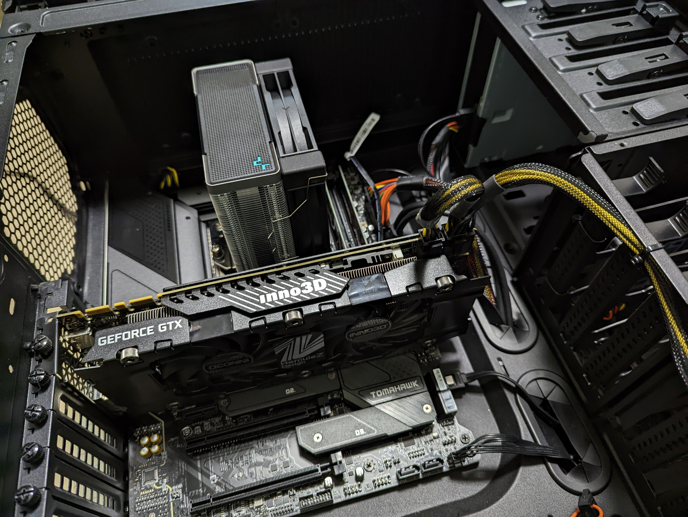
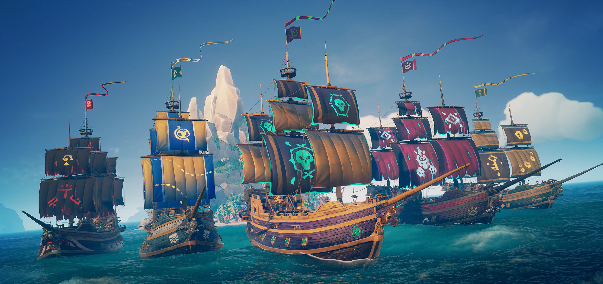

FURUZONO
どうも。furuzonoです。
小学校の時からプログラミングに興味があり、情報系の大学に入った人です。
特にゲームプログラミングに興味を持っており、最近はUnrealEngine5を触るために勉強中です。
そのために中学生の時に買ったゲーミングPCを改造したのですが、色々学んでるうちにpc作りにもハマってしまいました。
まだまだ知らない技術が多いため、勉強して知っていきたいです。よろしくお願いします。
使用技術
C/C++
HTML，CSS
Windows，Ubuntu，UE5
プログラミング以外の趣味
最近ある先輩のアドバイスもあって、Youtubeを見まくってPCをほぼ自作したのですが、その影響でPC作りにハマりました。
お金がかかる趣味ができてしまったかもしれません。
その他の趣味はゲームです。
前はモンハンをしていましたが、最近はSea of thievesという航海に出て宝を集めたり、
他のプレイヤーの船を沈めて宝を強奪したりする神ゲーにハマっています。


好きなYoutuber
吉田製作所
毒舌な感じのレビュースタイルが面白くて好きです。
PCを自作するときに参考にしたYoutuberの一人なのですが、動画が結構面白くて好きになりました。
自由枠
Sea of thieves面白いので是非！
steamのリンクはこちら
経歴
九州工業大学 情報工学部 情工Ⅰ類 在学